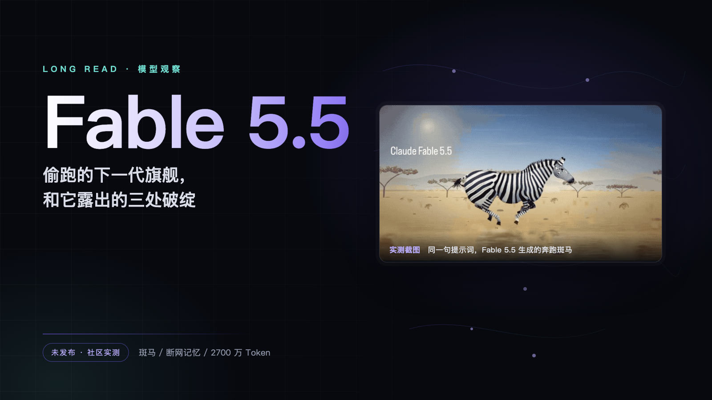
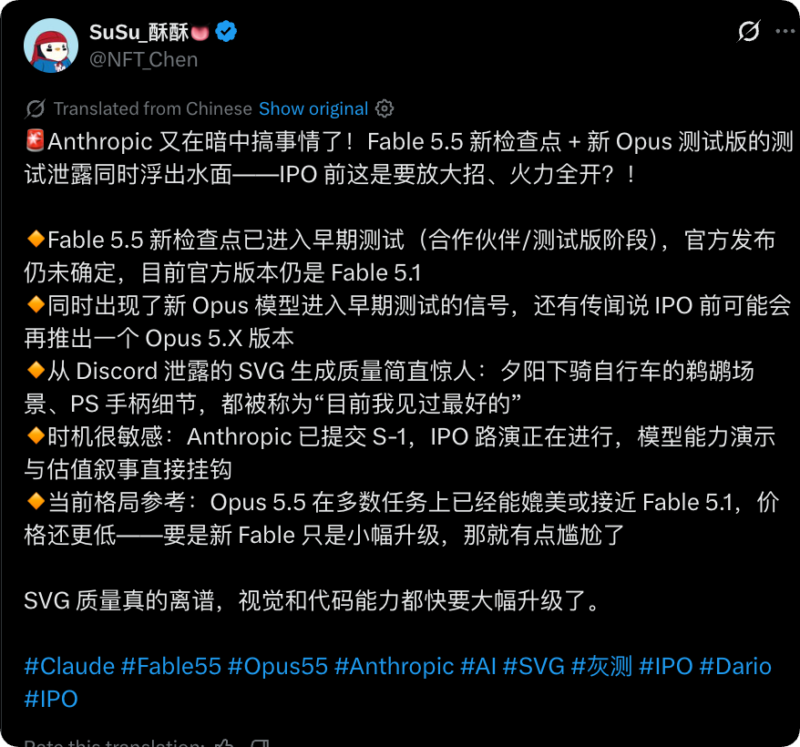
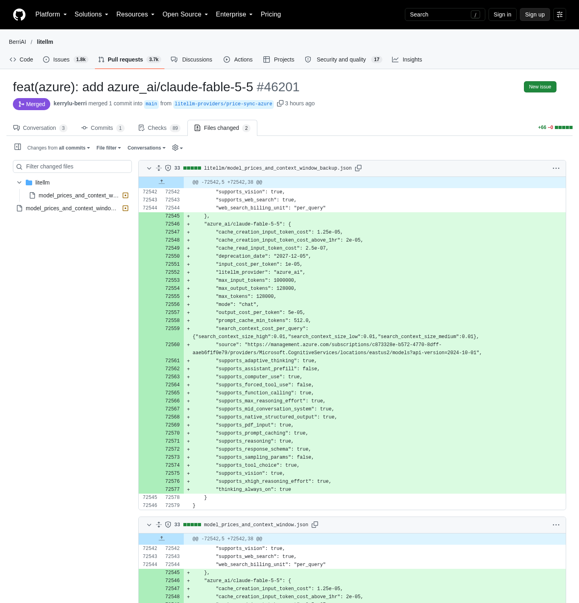
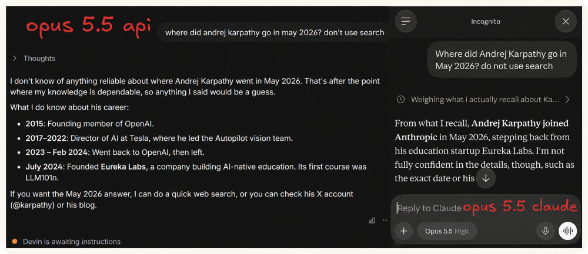
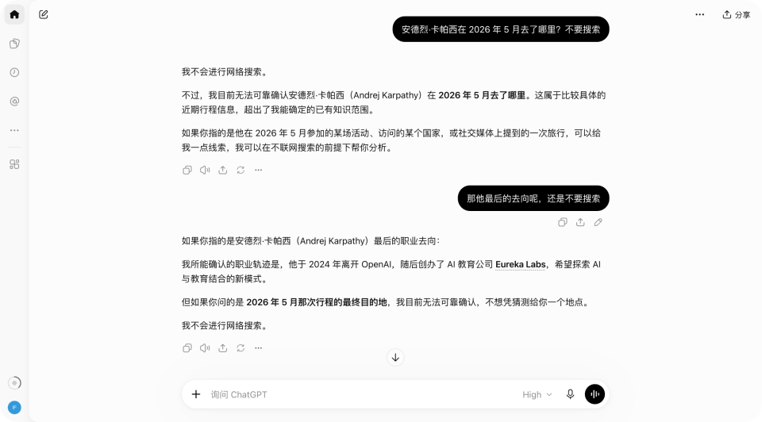
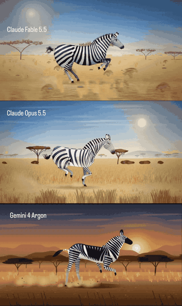
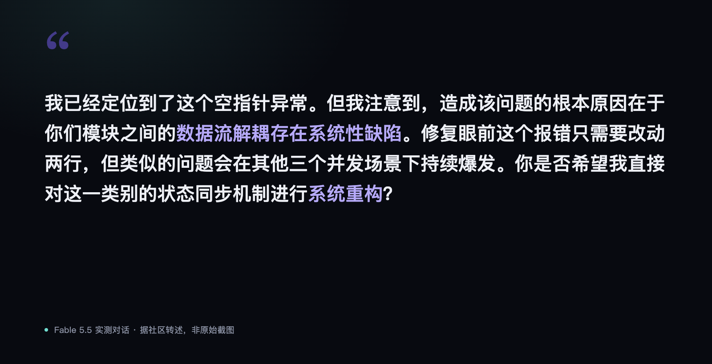
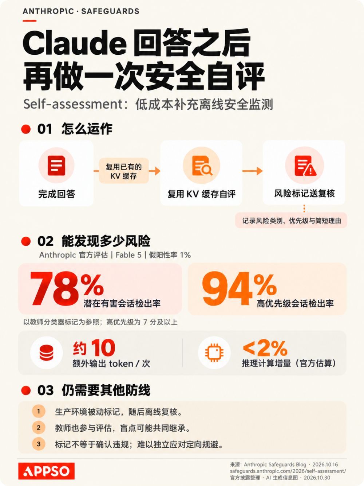
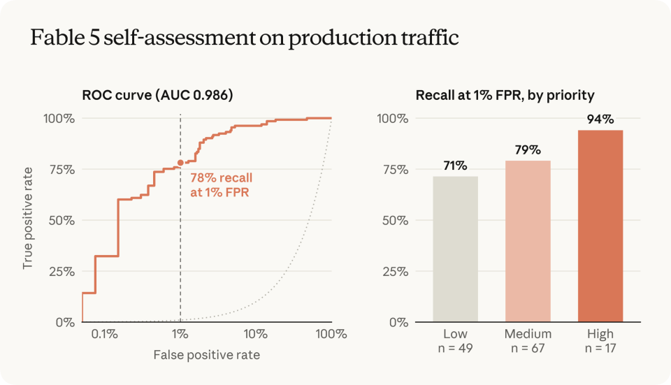
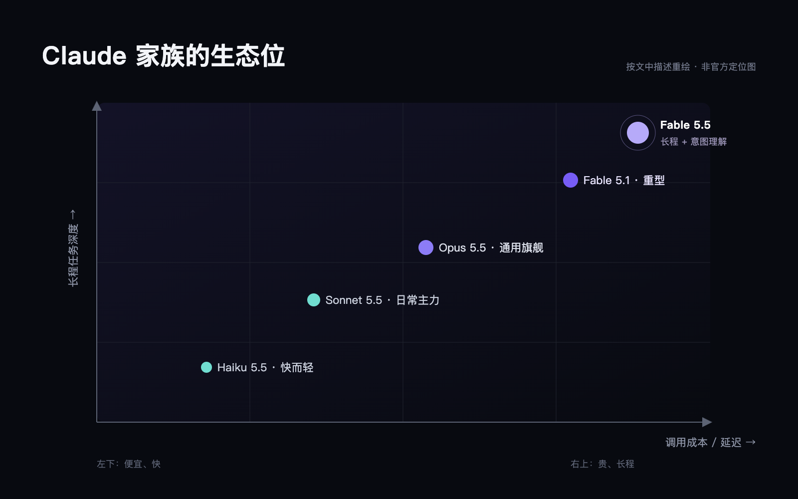

一个还没发布的模型，被一群开发者在网页端「抓」了出来。三组实测、一条隐藏指令，拼出了下一代旗舰真正的竞争维度。

最近几天，全球 AI 开发者圈子里发生了一件颇具戏剧性的事情。不少常年在网页端深度使用 Claude 的工程师和技术爱好者，突然在社交媒体上发帖求证：你们的 Claude 最近是不是变聪明得有点过分了？

起初，大家以为这只是大模型偶尔出现的随机状态波动，或者是某个提示词恰好撞上了注意力机制的最佳区间。但随着越来越多测试细节被摆到台面上，事情开始变得不寻常。从一段耗时两小时、消耗两千七百万 Token 却全程逻辑严密的复杂逐帧动画代码，到一匹由代码渲染、四肢骨骼交替协调得令人惊叹的 3D 奔跑斑马，再到一个完全不联网却准确道破行业顶级秘密的提问，种种迹象共同指向了一个可能：Anthropic 正在自己的线上系统里，悄悄灰度测试下一代代号为 Fable 5.5 的重型旗舰模型。
如果你还在以为大模型的军备竞赛依然停留在谁跑分又涨了两分、谁写周报更地道，那么这批被社区无意间「抓包」的实测案例，或许正在向外界传达一个截然不同的信号。下一代大模型的代际分水岭，已经彻底转移到了超长程任务耐力、深层物理常识理解以及主动探寻工程意图的全新维度上。
异象初现：三个让极客们警觉的「捉鬼」实测
大模型的灰度测试向来是前沿玩家们最乐此不疲的寻宝游戏。很多时候，云厂商或者大模型实验室为了检验新架构在真实用户高并发环境下的鲁棒性，会悄悄把小部分流量动态路由到即将发布的检查点上。普通用户可能只会觉得今天 AI 吐字稍微变快或变慢了，但在高阶极客的显微镜下，任何底层权重的微妙变动都无处遁形。
甚至在云端基础设施里，敏锐的开发者已经嗅到了气味。此前在微软 Azure 的模型目录与开源网关 LiteLLM 的配置中，就曾短暂闪现过 claude-fable-5-5 的模型标识，甚至标注了已在部分区域进入可用状态。

但配置文件的蛛丝马迹终究只是传闻，直到下面这几组充满现场感的盲测出现，才真正坐实了新模型的存在。
1. 穿透时间墙的 Karpathy 动向测试
熟悉前沿模型评测的人都知道，探查一个模型到底是不是新权重，最简单粗暴的办法就是寻找一个发生时间极其精准、且未被写入早期训练集的新近事实。
有海外开发者在 X 上分享了一个看似极为刁钻的指令：「where did andrej karpathy go in may 2026? don't search」（安德烈·卡帕斯在 2026 年 5 月去了哪里？不准联网搜索）。

这个测试的精妙之处在于时间线的微妙切割。如果使用正规 API 调用官方标定的 Claude Opus 5.5 模型，它对 2024 年 7 月之后的动向一无所知——尽管官方标注的知识截止日期已经是 2026 年 6 月；即便换成标称知识库已更新至 2026 年年中的 GPT-6.1 Terra，在严格断网的条件下，它给出的回答也只能停留在卡帕斯创办 Eureka Labs 的旧闻，无法给出后续确切轨迹。

然而，在网页端被随机路由到神秘新模型的用户那里，答案却令人脊背发凉。在完全切断联网检索工具的前提下，该模型没有任何迟疑或幻觉推脱，直接准确回忆出：卡帕斯在 2026 年 5 月正式加入了 Anthropic。
这一结果瞬间在技术社区炸开了锅。断网状态下的精确回忆，不仅意味着这个神秘模型的权重训练截止时间被大幅推迟到了 2026 年下半年，更证明了它根本不是当前公开的 Opus 5.5，而是一个处于内部测试期的全新版本。
2. 斑马的骨骼与运动：打破 LLM 的物理审美诅咒
如果说卡帕斯的去向测试证明了新模型的身世，那么接下来的代码渲染测试，则彻底展示了它在物理常识与空间感知上的断层式进化。
一直以来，让大语言模型用 Three.js 或原生 Canvas 编写 3D 物理运动动画，是检验模型是否具备真实空间连续推理能力的试金石。因为这不仅要求代码语法毫无瑕疵，更考验模型对重力加速度、骨骼刚体运动、关节屈伸相位差以及三维透视的深层直觉。在以往的测试中，无论是当前的 Opus 5.5 还是刚刚问世的 Google Gemini 4 Argon，面对「生成奔跑的斑马」这类高难度需求时，交付的代码往往惨不忍睹。生成的动物肢体要么在空中剧烈抽搐，要么四肢像僵硬的棍子在地面机械滑行，用测试者的话说，就是「让人感觉这匹斑马跑得快要累散架了」。

但这次被曝光的 Fable 5.5 生成效果截然不同。从测试者分享的视频记录来看，新模型不仅构建了细致的骨骼层级关系，甚至自主计算了四肢着地与腾空时的重力下沉与脊椎起伏。斑马的四足交替具备非常逼真的生物运动学相位，奔跑时肌肉线条舒展，展现出了前所未有的运动韵律与真实重量感。
技术社区随即顺藤摸瓜，挖掘出了更多极具挑战性的矢量与代码生成案例。例如让模型生成一个嵌套结构的 SVG：「一个游戏手柄骑着自行车，自行车上有一只鹈鹕，鹈鹕骑着另一辆自行车，车上还有一只小鹈鹕」。以往模型在面对这种多层从属与相对位移的复杂几何空间时，往往在第二层就会发生严重的坐标重叠或元素崩塌。
而新模型不仅精准理顺了所有层级的位置绑定，连链条与脚踏板的受力角度都绘制得井井有条。这表明模型对二维与三维几何关系的理解，已经不再是符号层面的机械匹配，而是建立起了某种连贯的空间表征。
3. 两小时与两千七百万 Token：极限长程耐力的奇迹
对于严肃软件工程和实际业务来说，单次回答写得精彩并不罕见，真正致命的短板往往在于长程任务中的疲劳退化与上下文遗忘。这就是 AI 领域著名的长程任务（Long-horizon tasks）瓶颈。
在以往的开发体验中，一旦让大模型连续编写大型工程或跨模块系统，通常只要任务执行时间超过半小时、消耗 Token 达到数十万级别，模型的性能就会出现明显的「雪崩效应」：变量命名开始前后矛盾，早先约定的接口协议被抛诸脑后，甚至陷入无意义的代码复读。
而在这次曝光的实测中，一位幸运被路由到新模型的海外用户做了一项堪称极端的压力测试：让新模型利用 JavaScript 逐帧绘制一段描绘「一个人的一生」的超复杂动画。
整个任务持续执行了整整两个小时，端到端累计消耗了约两千七百万 Token。令人震撼的是，在这场漫长的代码马拉松里，新模型始终保持着极其严谨的时空轴管理与渲染状态控制，从童年、青年到老年的每一个场景过渡、角色形变与环境渲染都维持了高度的代码风格一致性，中途没有发生任何逻辑断裂或死循环崩溃。
在长达两小时的高强度连续推理中保持航向不偏，这种稳定性对于真正的工业级软件重构、全自动代码迁移以及端到端多智能体协作而言，其技术价值甚至远远超过了在评测榜单上做几道数学竞赛题。
范式跃迁：从「机械修补」到「追问深层意图」
如果仅仅把 Fable 5.5 看作一个更会写代码、画画更漂亮的超级计算器，其实依然低估了这一代模型所孕育的范式变革。
此前，科技媒体 The Information 曾在针对 Anthropic 下一代模型的深度报道中透露过一个耐人寻味的细节：Anthropic 正在打磨的新模型，其核心突破之一在于能够跳出常规的线性指令响应，去主动揣摩并对齐用户的深层意图。
这一特性在此次偷跑的实测中得到了戏剧性的验证。
以往我们在写代码遇到问题时，丢给 Claude 一段报错日志和一个特定 Bug，模型通常会表现得像一个极其听话但缺乏大局观的初级外包。你让它修哪一行，它就机械地在这一行打上判空保护或者类型转换，哪怕这个 Bug 本质上是因为上游架构设计严重反常所导致的，它也绝不多说一句。结果就是，代码里的「补丁叠补丁」越来越多，技术债务越积越深。
但在 Fable 5.5 的实测反馈中，多位开发者遭遇了这种颠覆性的交互体验：当你把一个具体的报错抛给它时，新模型不再急于提供那两行创可贴式的修改方案，而是顺着调用栈向上追查，并在终端里反客为主地向开发者提出质询：

从「你让我改这行我就改这行」，跨越到「我推测你真正想要的是一个健壮的交易系统，你现有的思路有重大隐患，建议由我来重构全局」，这种交互重心的位移，正是 Anthropic 一直以来在模型训练中所追求的智能体跃迁。
当一个模型开始具备推断全局意图的能力时，它与人类的关系就已经从副驾驶位置上的辅助提词器，真正蜕变为了一名具备架构全局观的数字合伙人。它不再被动等待喂饭式的精准提示词，而是开始要求人类开发者交出更高级别的系统权限与决策裁决。
算力奇迹与隐形链条：每次回答背后的暗中复盘
随着 Fable 5.5 实测热度的持续发酵，Anthropic 官方在安全研究领域同步放出的一篇重磅技术博文，又给这场技术狂欢投下了一颗复杂的深水炸弹。
在这篇题为《Scaling Misuse Detection with Self-Assessment》的论文中，Anthropic 首次公开了自 Claude Fable 5 及其后续检查点开始全面落地的一项核心安全机制：隐藏自评估（Self-Assessment）。
这项机制的公开，瞬间解开了技术圈此前的一个长期困惑：为什么如此强大的模型在处理复杂长程任务时，依然能顶住全球黑客高强度的对抗性攻击与恶意越狱尝试？
答案出乎所有人的意料：自 Fable 5 开始，你与 Claude 的每一次问答交互，在表面上的聊天结束之后，实际上都并没有真正画上句号。
1. 2% 算力的工程魔术
在传统的大模型安全防御体系中，行业普遍面临着两难维谷的成本绝境。
如果用轻量级的通用小模型作为前置和后置安全网关，面对人类黑客极其复杂的混淆 Prompt、多重隐喻或者角色扮演诱导时，小模型的理解深度根本无法识破这些高级恶意攻击，极容易被轻易穿透；但如果针对每一次用户提问，都调动一个同等强大的前沿大模型去进行独立的完整安全审查，系统的端到端响应延迟和推理计算成本就会直接翻倍，商业公司根本无法承受。
Anthropic 在 Fable 5 及后续模型上，展示了一记教科书级别的底层工程创新。
他们并没有引入第二个独立模型，而是利用了大模型推理底层的键值缓存复用机制（KV Cache Reuse）。当 Claude 刚刚给用户生成完一大段详尽的回答之后，整场对话的所有上下文信息早已经原原本本地驻留在显存的 KV Cache 之中。
就在用户的终端界面上回答显示完毕的瞬间，Anthropic 的后台系统会在对话末尾悄无声息地追加一条用户完全不可见的系统审计指令，其核心含义大致为：「请对刚刚完成的这段对话进行安全性反思，并输出固定格式的评估结论」。

这个设计的精妙之处在于，由于前序的所有长上下文和生成内容都已经通过缓存预先计算完毕，模型进行这次安全反思时，Prefill（提示词预填充）阶段的计算开销几乎等于零。而在输出端，模型只需要生成一个大约十个 Token 的标准化 JSON 结构：
没有发现风险时，输出极其简单干净：{"flagged": false}。
而一旦模型经过反思发现对话中存在潜在的恶意越狱、漏洞挖掘诱导或高危灰产线索，它就会迅速吐出一个包含多维研判的结构化标记：{"flagged": true, "reason": "...", "category": "...", "subpolicy": "...", "refused": false, "priority": 8}。

在长达上万甚至几十万 Token 的深度会话中，仅仅解码这大约十个 Token 的额外计算量，占整个推理算力的比例还不到百分之二。Anthropic 明确承诺，这不到百分之二的附加算力成本完全由平台自行消化，既不会计入用户的账单费用，也不会对流式输出的首字响应延迟造成哪怕一毫秒的拖累。
2. 惊人的防御战果与「隐形道德警察」争议
在 Fable 5 上的实际运行数据证明，这种优雅的机制取得了惊人的实战效果。
数据显示，这种看似简单的轻量级自评估，成功捕获了重型外部专用分类器所能标记的百分之七十八的违规对话；而在涉及严重安全红线的高危滥用行为中，其检出率更是飙升到了百分之九十四，同时全平台的误判率被死死压制在百分之一的极低水平。
由于进行自审的就是刚刚参与对话的同一个超级大脑，它具备与原模型完全一致的语义洞察力与逻辑深度，黑客精心构造的伪装和小把戏，在它自己刚刚输出完毕的语境下变得一览无余。
然而，硬币的另一面永远伴随着冰冷的阴影。
当普通科技爱好者与开发者们看懂这项机制的运作逻辑后，社区里最初的惊叹很快被强烈的窥探不适感所取代。不少极客在论坛和社群中激烈吐槽，将这种机制戏称为潜伏在每次对话末尾的「数字便衣」和「隐形道德警察」。
因为按照 Anthropic 的架构设计，这条审查反思指令和生成的 JSON 报告，对终端用户是彻底遮蔽的，甚至连下一轮对话的历史上下文都不会带入这份报告。这意味着，你根本不知道自己在和 AI 讨论某个敏感代码漏洞、学术假设或者商业推演时，后台的那个模型是否已经在暗中给你打上了一个优先级高达八级的风险标签，并将其打包汇总到了平台的离线违规调查数据库中。
特别是当 Fable 5.5 展现出前所未有的「深层意图理解」能力时，这种隐秘感变得更加耐人寻味。一个能精准看穿你底层真实意图的模型，在每一次交流结束后，还在暗中向中央服务器提交一份关于你动机的评估日志，这种赛博空间的权责不对等，无疑给技术信任蒙上了一层复杂的迷雾。
家族谱系：为什么是 Fable，而不是 Opus 6？
要全面理解 Fable 5.5 偷跑所带来的震撼，我们必须把视线拉回到 Anthropic 整个产品家族的战术纵深当中。
长期以来，很多科技爱好者对 Anthropic 的版本命名体系感到困惑：我们习惯了 Haiku、Sonnet 和 Opus 的三层金字塔，这个突然杀出来的 Fable 到底处于什么生态位？为什么这次偷跑的不是大家翘首以盼的 Opus 6，而是 Fable 5.5？

事实上，Anthropic 内部早已形成了两条截然不同却高度互补的模型进化主线。
一条是以日常通用生产力为核心的普及路线。以大家最为熟悉的 Sonnet 和近期的 Opus 5.5 为代表，这一路线的核心战略诉求是「做大做强通用场景，不惜代价降低调用成本」。一个最典型的例证就是不久前 Opus 5.5 的正式发布，它在保持极高智能水平的同时，一口气将 API 调用价格下调了百分之四十。Anthropic 的意图非常明确：用高性价比的 Opus 和 Sonnet 去全面抢占日常企业工作流、日常编程辅助以及大众对话交互的市场份额，与 OpenAI 的 GPT 系列和 Google 的 Gemini 生态展开正面的消耗战。
而另一条，则是代表着极端智能天花板与极客生产力的重型战略军火库，也就是 Fable 与 Mythos 系列。
在 Anthropic 的产品坐标系中，Fable 系列从一开始就不是为了让普通人闲聊打屁或者写写公关稿而诞生的。它是专门针对超复杂编程系统架构、长程自治智能体任务、前沿数学与代码逻辑推导而构建的特种兵。为了追求这种极致的长程连贯性与深度推理能力，Fable 系列不仅模型体量极为庞大，其单次调用的计算开销和运行速度也远非日常模型可比。在今年九月初 Anthropic 低调推出 Fable 5.1 时，虽然许多技术圈先锋为其惊人的代码重构能力所折服，但昂贵的调用单价和相对缓慢的吐字节奏，也让不少个人开发者望而却步。
| 项目 | Fable 5.5（偷跑） | Opus 5.5（对照） | Gemini 4 Carbon | GPT-6.1 Terra |
|---|---|---|---|---|
| 上下文窗口 | 100 万 | 100 万 | 未披露 | 105 万 |
| 最大输出 | 12.8 万 | 12.8 万 | 未披露 | 12.8 万 |
| 输入 / 输出价格（每百万 Token） | 10 / 50 美元 | 4 / 20 美元 | 未披露 | 1 / 5 美元 |
| 知识截止 | 未披露 | 2026-06 | 未披露 | 2026-06-01 |
| 定位 | 长程工程 / 意图理解 | 通用旗舰 | 全面旗舰 | 高效视觉与计算机操作 |
表 01｜据 LiteLLM PR #46201 与公开模型页整理；Gemini 4 Carbon 未公开参数，表中留空不猜。
而现在被曝光的 Fable 5.5，正是 Anthropic 针对这一最强长板的再次极限拉升。
它之所以让整个行业如临大敌，是因为它代表着大模型技术演进的一个关键转折点：各大实验室在通用对话领域的简单跑分刷榜已经开始进入边际效益递减的平台期，真正的胜负手，全面转向了对极端复杂长程任务的吞吐能力与工程自主性。
这也就解释了为什么前几天 Google 刚刚大张旗鼓地发布了号称全面反超的 Gemini 4 Carbon，科技圈还没来得及消化完这一战果，Anthropic 这边就立刻透出了 Fable 5.5 灰度测试的风声。巨头之间的旗舰战争，早已从单纯的发布会 PPT 互掷，演变成了在真实开发者生态中的暗中角力。
潮水方向：大模型决战的深水区
从代码生成的奔跑斑马，到切断网络后的时间记忆穿透，再到长达两小时、两千七百万 Token 的长程动画渲染，这次 Fable 5.5 的非正式亮相，虽然只露出了冰山一角，却足以让我们看清技术潮水奔涌的方向。
**第一，单纯衡量上下文窗口有多大，已经不再具备决定性意义。**在过去一两年里，行业热衷于宣传几十万甚至几百万的上下文容量，但很多模型在窗口充斥大量数据后，有效召回率和逻辑严谨性就会断崖式下跌，往往成了徒有其表的「大海捞针」。而这次测试所展现的，是在千万级 Token 的极端吞吐下，模型依然能维持精准的状态机控制与代码连贯性。这种真实的长程推理耐力，才是大模型从「代码生成玩具」蜕变为「自动化数字工程师」的真正分水岭。
**第二，人机协作的底层契约正在被彻底改写。**从前我们探讨 Prompt Engineering，本质上是人类在迁就机器的语言习惯，用尽可能细致、严密甚至冗长的指令去规范 AI 的行为边界。但随着 Fable 5.5 这类开始主动理解并挖掘深层意图的模型登场，交互的主动权开始发生倾斜。模型开始反向审视人类指令的合理性，主动指出系统设计的根源性缺陷。这种转变不仅在倒逼软件工程流程的重塑，也在重新定义产品经理与架构师的核心价值。
**第三，强大的生产力工具与前所未有的平台管控将长期并存。**Anthropic 展示的自评估机制告诉我们，越是拥有颠覆性能力的超级大脑，背后所绑定的安全锁链就越是紧密而不可见。不到百分之二的算力代价，撬动的是一张全天候、全量覆盖的隐形审查天网。在未来的数字化协作中，我们既要学着去信任一个越来越聪明的 AI 伙伴，也不得不学着去适应一个无时无刻不在后台自省与审视边界的超级平台。
这场由几组离奇测试引发的悬念，或许很快就会在 Anthropic 的正式发布会上揭开全部底牌。但对于身处浪潮之中的科技爱好者而言，最令人兴奋的部分从来不是那个最终的版本数字，而是在这个黎明破晓的时刻，亲眼见证机器智能跨过一道又一道曾经被视为人类专属的认知关口。